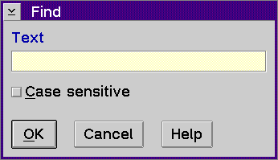

Find Window
Displays the Find window which allows you to search for a text string.
To use the Find window to search for a text string:
- Type the text string you want to search for in
the Text entry field.
- Enable the Case sensitive check box if you want
to search for the string exactly as typed. Disable this check box to search
for uppercase and lowercase characters.
- Select the OK push button.
The search string can have alphabetic and numeric characters, a maximum
of 256 characters, and uppercase and lowercase characters.
[Back: View Menu Choices]
[Next: Find next]